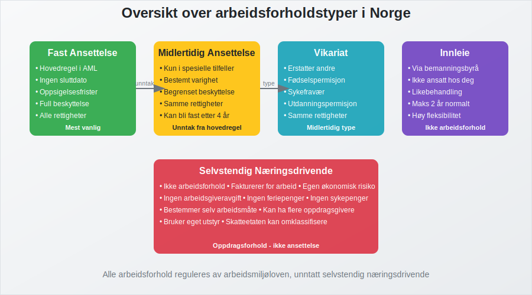
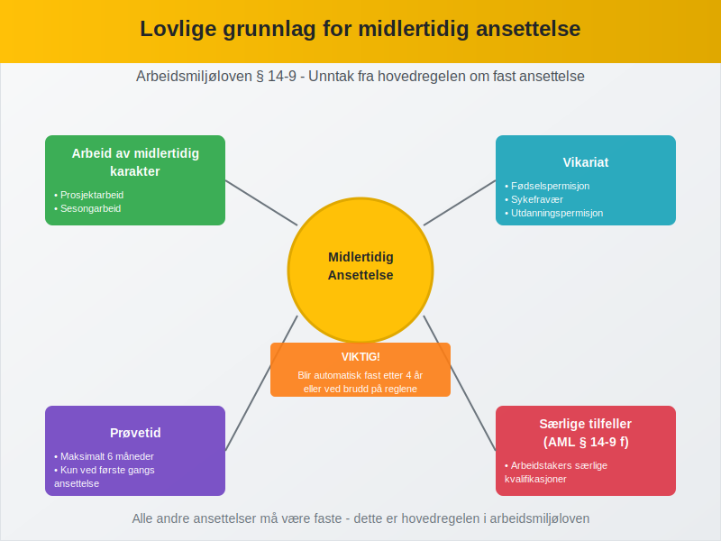
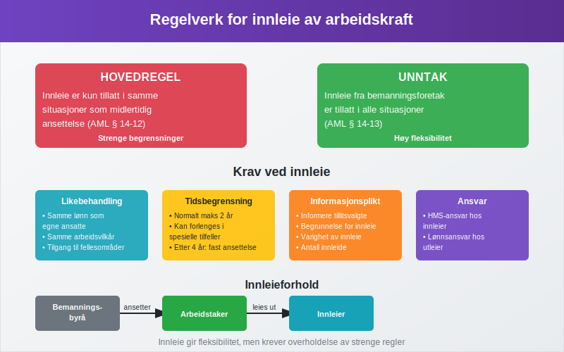
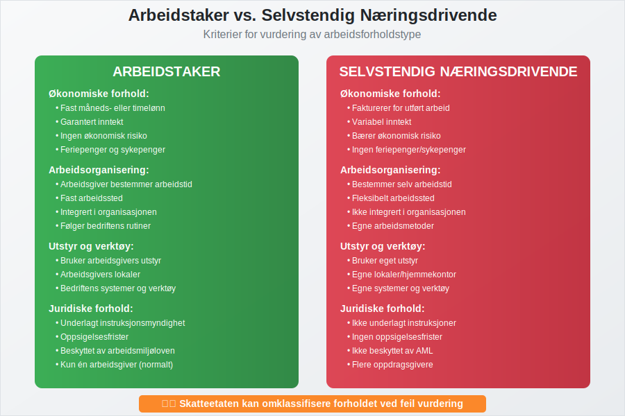
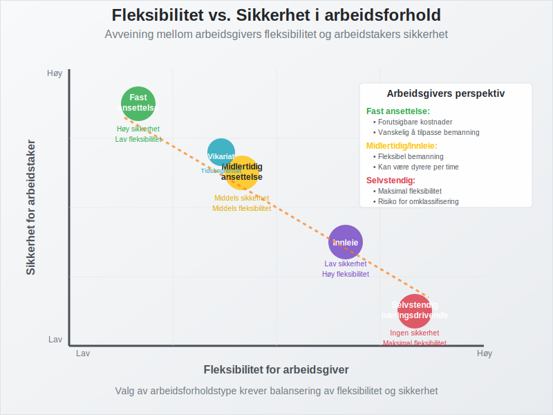

Arbeidsforholdstype refererer til den juridiske og praktiske rammen som definerer forholdet mellom arbeidsgiver og arbeidstaker. I Norge reguleres arbeidsforhold hovedsakelig av arbeidsmiljøloven, og valg av arbeidsforholdstype har betydelige konsekvenser for både juridiske rettigheter, økonomiske forpliktelser og regnskapsføring.
Les mer om krav til arbeidskontrakt i artikkelen Arbeidskontrakten.
Arbeidsforholdstypen bestemmer alt fra oppsigelsesfrister og feriepenger til hvordan lønnskostnader skal behandles i regnskapet og rapporteres gjennom a-meldingen.
I tillegg spiller Arbeidsmiljøutvalg (AMU) en viktig rolle i å styrke samarbeidet om HMS i virksomheter.
Hovedtyper av arbeidsforhold i Norge
I norsk arbeidsliv skiller vi mellom flere grunnleggende arbeidsforholdstyper, hver med sine særskilte kjennetegn og juridiske rammer.

1. Fast ansettelse
Fast ansettelse er den vanligste og mest beskyttede formen for arbeidsforhold i Norge. Dette er hovedregelen i arbeidsmiljøloven, og gir arbeidstakeren størst trygghet og rettigheter.
Kjennetegn ved fast ansettelse:
- Ingen forhåndsbestemt sluttdato
- Full beskyttelse mot usaklig oppsigelse
- Rett til feriepenger, sykepenger og andre lovpålagte ytelser
- Oppsigelsesfrister fra 1-6 måneder avhengig av ansettelsestid
- Rett til permisjon ved fødsel, adopsjon og omsorg
2. Midlertidig ansettelse
Midlertidig ansettelse kan kun benyttes i spesielle situasjoner som er uttrykkelig hjemlet i arbeidsmiljøloven. Dette er et unntak fra hovedregelen om fast ansettelse.
Lovlige grunnlag for midlertidig ansettelse:
- Arbeid av midlertidig karakter
- Vikariat for arbeidstaker med rett til å komme tilbake
- Prøvetid (maksimalt 6 måneder)
- Sesongarbeid
- Prosjektarbeid med avgrenset varighet

3. Vikariat
Vikariat er en spesiell form for midlertidig ansettelse hvor en person erstatter en annen arbeidstaker som har rett til å komme tilbake til stillingen.
Typiske vikariatsituasjoner:
- Fødselspermisjon og foreldrepermisjon
- Sykefravær av lengre varighet
- Utdanningspermisjon
- Velferdspermisjon
- Militærtjeneste
Sammenligning av arbeidsforholdstyper
| Arbeidsforholdstype | Varighet | Oppsigelsesfrister | Feriepenger | Sykepenger |
|---|---|---|---|---|
| Fast ansettelse | Ubestemt | 1-6 måneder | Ja | Ja |
| Midlertidig | Bestemt periode | Ingen/korte | Ja | Ja |
| Vikariat | Til fast ansatt returnerer | Ingen/korte | Ja | Ja |
| Innleie | Variabel | Ingen | Via byrå | Via byrå |
| Selvstendig | Per oppdrag | Ingen | Nei | Nei |
Innleie av arbeidskraft
Innleie av arbeidskraft innebærer at en bedrift leier inn personell fra et bemanningsbyrå eller lignende. Den innleide arbeidstakeren har arbeidsavtale med utleiebedriften, ikke med virksomheten hvor arbeidet utføres.
Regelverk for innleie:
- Hovedregelen: Innleie er kun tillatt i samme situasjoner som midlertidig ansettelse
- Unntak: Innleie fra bemanningsforetak er tillatt i alle situasjoner
- Krav til likebehandling med egne ansatte
- Begrensninger på innleieperiode (normalt maksimalt 2 år)

Selvstendig næringsdrivende vs. arbeidstaker
Skillet mellom selvstendig næringsdrivende og arbeidstaker er avgjørende for både juridiske rettigheter og skattemessige konsekvenser.
Kriterier for vurdering:
Arbeidstaker-indikatorer:
- Fast måneds- eller timelønn
- Arbeidsgiver bestemmer arbeidstid og arbeidssted
- Integrert i virksomhetens organisasjon
- Bruker arbeidsgivers verktøy og utstyr
- Ikke økonomisk risiko
Selvstendig næringsdrivende-indikatorer:
- Fakturerer for utført arbeid
- Bestemmer selv hvordan arbeidet utføres
- Har flere oppdragsgivere
- Bruker eget utstyr
- Bærer økonomisk risiko

Regnskapsføring av ulike arbeidsforholdstyper
Hvordan lønnskostnader regnskapsføres avhenger av arbeidsforholdstypen:
Fast og midlertidig ansatte:
- Lønnskostnad føres som personalkostnad
- Arbeidsgiveravgift beregnes og føres
- Feriepengeavsetning gjøres
- Rapporteres via a-meldingen
Innleide:
- Kostnaden føres som kjøp av tjenester
- Ingen arbeidsgiveravgift for innleier
- Bemanningsbyrået håndterer lønnsrapportering
Selvstendig næringsdrivende:
- Kostnaden føres som kjøp av tjenester
- Behandles som enhver annen faktura
- Ingen lønnsrapportering for oppdragsgiver
Særlige hensyn ved valg av arbeidsforholdstype
Juridisk sikkerhet:
Feil klassifisering av arbeidsforhold kan få alvorlige konsekvenser. Skatteetaten og Arbeidstilsynet kan omklassifisere forholdet, noe som kan medføre:
- Etterbetaling av arbeidsgiveravgift
- Krav om etterlevelse av arbeidsmiljøloven
- Bøter og sanksjoner
Fleksibilitet vs. sikkerhet:
- Fast ansettelse gir høy sikkerhet for arbeidstaker, men mindre fleksibilitet for arbeidsgiver
- Midlertidig ansettelse gir mer fleksibilitet, men krever lovlig grunnlag
- Innleie gir høy fleksibilitet, men kan være kostbart
- Selvstendig næringsdrivende gir maksimal fleksibilitet, men krever klar avgrensning

Endringer i arbeidsforholdstype
Et arbeidsforhold kan endre karakter over tid. Typiske overganger:
- Midlertidig til fast ansettelse (etter 4 år eller ved brudd på reglene)
- Prøvetid til fast ansettelse
- Vikariat til fast ansettelse (hvis den faste ansatte ikke returnerer)
- Selvstendig til arbeidstaker (ved endrede arbeidsforhold)
Arbeidsforholdstype og akkordlønn
Uavhengig av arbeidsforholdstype kan lønnen organiseres på ulike måter. Akkordlønn kan for eksempel benyttes både for fast og midlertidig ansatte, men krever at det fortsatt foreligger et arbeidsforhold og ikke selvstendig næringsvirksomhet.
Konklusjon
Valg av arbeidsforholdstype er en fundamental beslutning som påvirker både juridiske rettigheter, økonomiske forpliktelser og praktisk drift. Det er viktig å:
- Velge riktig type basert på arbeidsoppgavenes karakter
- Sikre at alle lovkrav overholdes
- Dokumentere grunnlaget for valget
- Regnskapsføre korrekt basert på arbeidsforholdstypen
- Vurdere både fleksibilitet og sikkerhet
For bedrifter er det essensielt å ha gode rutiner for håndtering av ulike arbeidsforholdstyper, både for å sikre regelverksetterlevelse og optimal ressursutnyttelse.